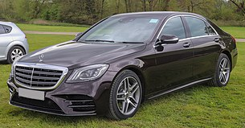

Mercedes-Benz W222
Mercedes-Benz W222 — шестое поколение флагманской серии представительских автомобилей S-класса немецкой марки Mercedes-Benz, выпускающееся с 2013 года. Пришло на смену модели W221. Разработкой дизайна, начатой ещё в 2009 году, занимался Роберт Лесник. Экстерьер новой модели позаимствован у CLA-класса и первого поколения W212 E-класса. Презентация автомобиля состоялась 15 мая 2013 года в Гамбурге, Германия.
Выпускается в вариантах кузова седан  (с укороченной и удлинённой колёсными базами), купе и кабриолет (с 2015 года). Кроме того, имеет высокопроизводительные модификации от подразделения Mercedes-AMG в лице S63 AMG и S65 AMG (оба доступны в кузовах седан, купе и кабриолет), а также наиболее роскошную версию лимузин — Pullman, собранный суббрендом Mercedes-Maybach. Помимо заводского подразделения AMG автомобиль пользуется популярностью у различных тюнинг-ателье.
В 2017 году флагманская серия подверглась комплексному рестайлингу, который привнёс изменения во внешний вид, набор электронных систем и модельный ряд двигателей автомобиля[⇨]. Внешние изменения затронули оптику, бамперы и решётку радиатора, в то время как внутренние коснулись рулевого колеса, цветовой палитры отделки и некоторых элементов передней панели (в частности дисплеи были помещены под единое стекло). Обновились существующие и добавились новые системы помощи водителю. Технические модернизации были внедрены как для дизельных, так и бензиновых силовых агрегатов. Рестайлинг также затронул и наиболее мощные модели от подразделения Mercedes-AMG (на S63 был установлен 4,0-литровый битурбированный двигатель V8) и Mercedes-Maybach. Новая версия S-класса 222-ой серии была представлена в апреле 2017 года в рамках Шанхайского автосалона. В продажу автомобиль поступил летом того же года.